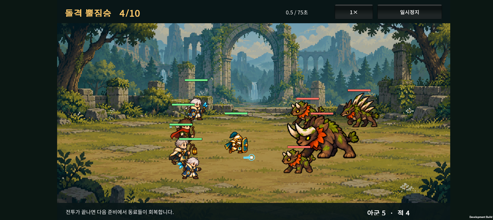
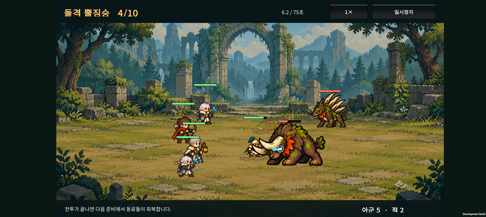
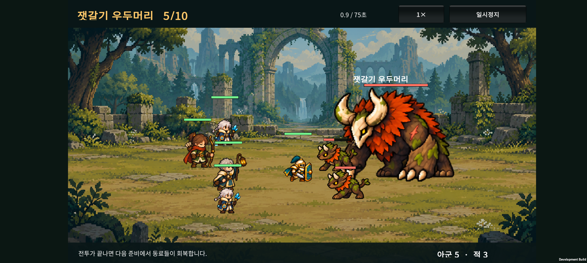
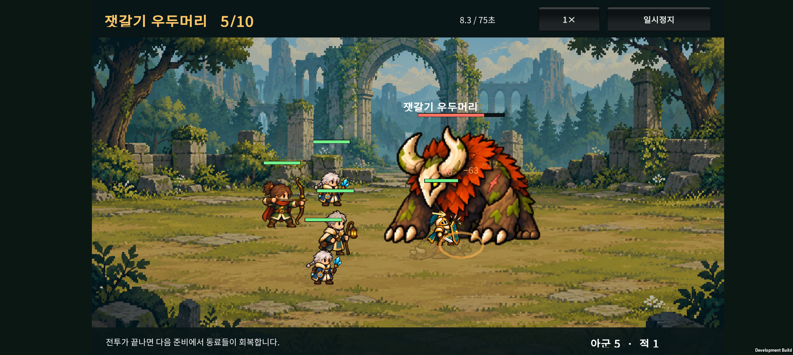

2026-10-23 · Unity / Android
1. 사용자 피드백과 기준
v0.19에서 큰 적에게 가려진 아군을 다시 그리는 처리를 먼저 적용했다. v0.20에서 몸 전체를 떨어뜨려 보니 전투가 너무 흩어져 보여, 후속 피드백에 따라 부분 겹침은 허용하고 완전히 묻히는 상황을 막는 방향으로 간격을 줄였다.
| 대상 | 규칙 |
|---|---|
| 졸개끼리 | 일부 겹쳐 싸울 수 있게 밀집. 서로를 통째로 가리지 않도록 최소 간격 유지 |
| 졸개와 아군 | 부분 겹침 허용. 작은 캐릭터의 몸을 알아볼 수 있도록 간격 보정 |
| 졸개와 보스 | 부분 겹침 허용. 작은 졸개 기준으로 간격을 계산하고 보스보다 앞에 표시 |
| 큰 보스와 아군 | 겹침 허용. 살아 있는 아군은 항상 보스보다 앞에 표시 |
| 쓰러진 유닛 | 살아 있는 유닛을 가리거나 이동을 막지 않음 |
정예는 일반 적의 간격 규칙을 적용한다. 무기를 휘두르는 순간의 끝부분과 공격 이펙트까지 서로 닿지 못하게 하는 규칙은 아니다. 전투 중 캐릭터의 몸과 남아 있는 적의 수를 알아볼 수 있도록 하는 것이 기준이다.
2. 표시 처리
- 쓰러진 유닛 → 보스 → 나머지 살아 있는 유닛 순서로 그린다.
- 일반 유닛끼리는 발 위치에 따른 깊이 순서를 사용한다.
- 보스 호위도 보스보다 앞에 표시한다. 간격 유지와 함께 큰 보스에게 졸개가 묻히는 상황을 막는다.
- v0.19의 청록빛 반투명 재표시는 제거했다. 아군은 원래 색과 불투명도로 표시한다.
- 체력바·보호막·보스 이름은 모든 캐릭터 뒤에 마지막으로 그린다.
보스의 피격 반응 정리
보스가 맞을 때마다 자세를 바꾸고 흔들리는 모습이 부산스럽다는 피드백을 반영한다.
- 보스는 피해를 받아도 피격 프레임으로 전환하지 않는다.
- 보스의 피격에 따른 좌우 흔들림과 붉은 점멸을 제거한다.
- 보스가 강한 공격을 받았다는 이유로 전투를 잠깐 멈추는 효과도 제거한다.
- 피해 수치·체력 감소·타격 이펙트·소리는 유지한다. 실제 피해와 보스의 공격·돌진·광폭화·쓰러짐 동작은 그대로 작동한다.
3. 이동과 공격
- 일반 적의 몸 크기를 기준으로 간격을 계산한다. 졸개·가시등·정예·보스는 서로 다른 몸 크기를 사용한다.
- 이전의 추가 여백 6을 제거하고, 둘 중 작은 몸의 폭·높이를 기준으로 약 30% 겹침을 허용한다. 큰 적의 크기를 통째로 축소하는 방식은 작은 동료가 파묻힐 수 있어 사용하지 않는다. 이 비율은 프레임별 그림 전체가 아닌 몸 간격 계산 기준이다.
- 적끼리는 옆으로 퍼지도록 하고, 큰 적 뒤에 막힌 공격자는 옆길을 통해 접근한다. 간격 보정으로 화면 밖으로 밀려나지 않도록 이동 가능한 범위를 제한한다.
- 보스와 졸개 사이에서는 졸개를 이동시킨다. 간격 보정을 위해 보스의 위치나 돌진 예고 위치를 밀지 않는다.
- 근접 기본 공격과 단일 대상 기술은 몸의 가장자리에 닿는 거리에서 사용할 수 있다. 원거리·범위 공격·지원 기술·보스의 사거리와 피해 수치는 기존 기준이다.
- 0.2초 돌진 이동 중에는 잠깐 몸을 가로지를 수 있고, 착지 후 간격을 다시 정리한다. 공격 동작의 뿔·무기 끝부분과 이펙트는 몸 간격의 기준에 포함하지 않는다.
- 살아 있는 아군끼리의 배치 간격은 이번 변경 대상에서 제외했다.
4. 확인 기록
- 순수 C# 전투 검사: 3,011개 통과. 겹친 시작 위치, 여러 적의 접근, 화면 범위, 보스와 호위, 쓰러진 유닛, 근접 공격 성립, 정예 뒤의 원거리 적 우회·공격을 포함한다. 작은 동료와 정예가 일부 겹친 채 남아 있으면서 작은 몸의 식별 영역은 확보하는 경우도 검사한다.
- 원정 검사: 1,675개 통과.
- Unity 검사 통과: 숲 그림 좌표 258개, 보스 표시 순서 12개, 실제 보스·일반 적 피격 이벤트 반응, 결과 전환, 성장 조작 17개.
- 부분 겹침 조정 APK 빌드 성공. SHA-256:
F2B3A0C01000FA08C66F6A2315A414013E4C9D0B29F51DDD2EB78673E7FCC097. - 로그:
unity/Logs/v020-compact-build.log(로컬 빌드 산출물). - Galaxy Buddy2에 업데이트 설치하고 4·5전투에서 간격과 보스 표시를 확인했다. 외형 확인용 준비 상태를 사용한 검사이며 자연 진행 기록은 아니다. 테스트 전 저장 데이터를 복원하고 원본과 바이트 단위 일치 확인을 마쳤다.
Buddy2 화면과 영상


현재 일반 적·정예 전투 영상 · 12초 · 이전: 몸 전체 간격 확보


현재 보스 전투 영상 · 12초 · 이전: 몸 전체 간격 확보
난도에 미치는 영향
간격은 전투 결과에도 영향을 준다. 초기 구현에서 정예가 뒤로 밀려 첫 돌진이 빗나가고, 원거리 적이 정예 뒤에 갇히는 현상을 발견해 접근 동작을 수정했다.
간격을 완전히 확보하던 시점의 고정 시드 1001·4전투에서 적의 총 피해량은 이전 버전 590.5 → 첫 간격 구현 256.9 → 접근 수정 후 440.3이었다. 그 표본에서 정예가 기본 공격 6회·돌진 적중 2회, 원거리 적이 기본 공격 4회를 수행했다.
시드 1001~1005·기본 3명 유지 전략의 비교:
| 구분 | 4전투 승리 | 평균 남은 팀 HP | 5전투 승리 |
|---|---|---|---|
| 간격 변경 전 | 0/5 | 0% | 0/5 |
| 몸 전체 간격 확보 | 5/5 | 29.2% | 0/5 |
| 현재: 부분 겹침 허용 | 5/5 | 4.8% | 0/5 |
피해·체력·공격 주기·보상 수치는 바꾸지 않았다. 이는 작은 자동 진행 표본이며 플레이어 승률이 아니다. 전투 간격을 좁히면서 교전 압박은 커졌지만, 난도 조정이 완료됐다는 의미는 아니다. 전체 간격 표본, 부분 겹침 표본.
5. 주요 파일
unity/Assets/Scripts/Core/CatalogSpacing.cs: 몸 간격, 근접 접촉 거리, 옆길 접근.unity/Assets/Scripts/Core/CatalogBattle.cs,CatalogSkills.cs: 이동·공격 단계 연결.unity/Assets/Scripts/Presentation/BattleVisibility.cs: 보스와 살아 있는 유닛의 표시 순서.unity/Assets/Scripts/Presentation/CatalogCombatLab.cs,CatalogBattleEffects.cs: 보스 피격 자세·점멸·흔들림·피격 정지 제거.unity/Assets/Editor/BossHitReactionValidation.cs: 실제 전투 이벤트로 숲·성채 보스와 일반 적의 피격 표시 확인.tests/CatalogCombat/Program.cs: 군집·공격·우회 경로 회귀 검사.
이전 작업: 숲 적 4종 애니메이션과 실기기 영상.